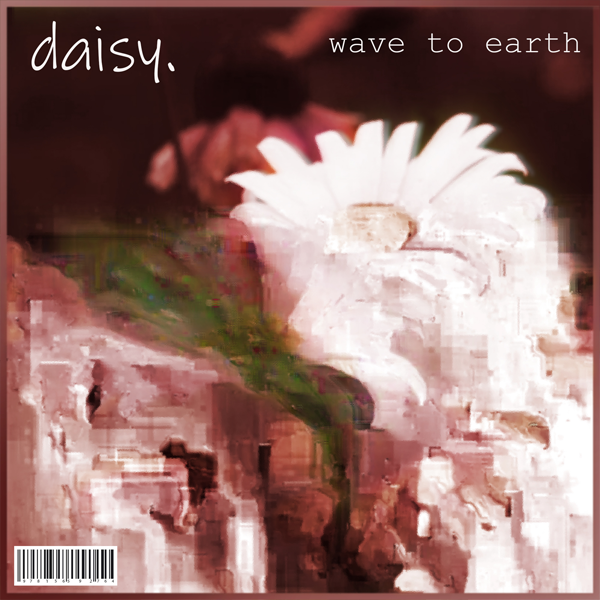
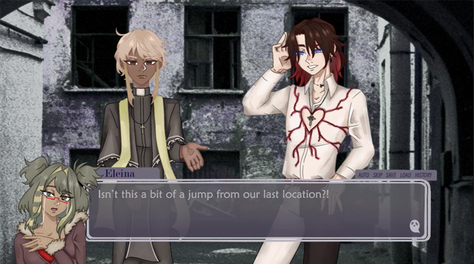

Glitch Art
1 / 3
For our first project in Art 74, we were instructed to go into the data of images we found online and adding or removing text. This addition or subtraction would "glitch" the image, which had an unpredictable effect on the images. This would end with the images all having unique edits. For my project, I wanted each image to have a different effect on them through trial and error.
Album Cover

Continuing off the idea of the glitch art, we were then instructed to take one of the images we glitched and turn them into an album cover in Adobe Photoshop. I based my album cover off of the real band called "wave to earth." and the song called "daisy".
Vector Art
1 / 2
Another project we worked on was in Adobe Illustrator. We learned how to create vector artwork, and was then tasked with taking an object we had around our house and drawing it. I used a plush I had on my desk as my subject. After having the vector art completed, we would then turn it into a sticker, and edit the artwork into a photo we take to look like a real sticker. I edited the vector artwork onto a photo I took outside of a 7eleven in Adobe Photoshop.
Digital Animation

1 / 5
Our next project would be in Adobe After Effects, where we learned the basics of how to edit videos. For this project, we would make a short animation that mimics gameplay of some sort. I decided to make this project into a person playing a Graphic Novel. I created all of the assets seen in the game such as the "menu" screen, the text box, and the character sprites, which were done in Procreate. Backgrounds are stock images that I took into Photoshop to edit and change into what I deemed fit for the environment.
Drawn From Sketchbook Project
1 / 2
For one of our projects in Art 3, we would take one of our daily doodles done in a sketchbook and turn it into something unique and original. I took my pen drawing of a bat, and decided to turn it into a character design and full illustration. This project gave me an opportunity to do what I love to do in my free time, while also challenging myself. Illustrations were both done in Procreate.
Coding Concept Artwork
1 / 2
In groups, we were tasked to create a fictional world where technology has evolved into a certain point. My group had decided on creating a fictional world revolving around the ocean, with the premise that merfolk had been alive for centuries and only now decided to contact humans. Using combined technology, we have found a way to allow merfolk to visit the land, and humans to visit the deep sea for extended periods of time. My part of the group was creating the dry suit for humans, and showing how technology has evolved to allow humans to essentially breathe underwater.